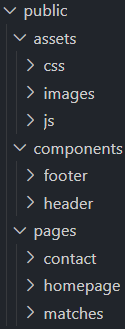

When we have different JavaScript files importing and exporting things throughout them, this came with ECMAScript 6 (ES6), and it helps organize our code and make it more reuseable. If we dont use type="module" in our script tag we will get an error that says it is not supported without it. This isn't a critical error as it is easily fixeable and very obvious if you forget it, but it is nice to understand why we need to do this. There is also another solution to this under package.json.
For structure of our HTML we talked alot about how to break it up.
With this structure we can divide css into assets, along with images and seperate JavaScript files for the different pages. Under components we can have the components we build along the way, this includes the header and the footer since they are reuseable. Here we later build a template engine so we can use the links and script tags for the different pages. Under pages we keep our pages with a syntax that makes sense. Homepage is the first pages we reach, and consequent page names is the other pages. We do not use index.html as this is a special syntax that alot of web servers are configured to serve as the default page.
We talked about app.use(express.static("public")); this week. This is a way to serve our static files to the clients web browser. With this we can let express handle the request in our routes. It remove alot of extra code and by this we can delete the previous used __dirname.
It also protects us against Cross-Site Scripting and CORS issues, by using express build-in security for serving static files. It also gives us directory isolation. If someone tries to get one of the html files outside of the routes they can't do it.
In Node.js we can use both CommonJS and we can use ECMAScript to import and export.
With CommonJS we use the system in Node.js we used in the start where we used require();. This way we can import modules from other places. We did this example in the very start as a way to import express to our app.js.
By using ECMAScript we can do this easier, but first we have to enable it by typing in "type": "module" in our package.json file. This allows us to import regulary, we can have both types of import in Node.js, so personally i can't see the benefit of not just always enabling "type": "module" from the start so you can always use both.
For fetching in client vs backend there is several pros and cons.
For fetching in the client side it is less secure than fetching in the backend. Besides that it does have the benefit of less server load, and can give slightly improved performance, for a more dynamic user experience. There can also be CORS problems when serving client side.
For fetching in the backend we can complete eliminate the CORS problems as we now serve sites from the same place. It has slightly better security and it can be revelant if we have a lot of processing of data. This does increase the server load though as everything goes through the server.